Lina Wang
Lina Wang
Seamless Integration
Enable collaboration features to work fluidly across Agnes AI tools without context switching.

+100% DAU
30k to 60k growth
50%
users use AI Design
UX/UI Designer (me)
2 Project Managers
1 week
This project enhanced the collaboration feature in the Agnes generative AI platform by making the “one-click resolve” feature more visible through an expandable floating action button and by adding a centralized comment management tab to give users intuitive control over AI-powered edits.
How might we design a commenting flow that encourages users to use comments as the primary feedback tool, while giving them intuitive control to review, manage, and resolve all feedback with Agnes’s one-click assistance?
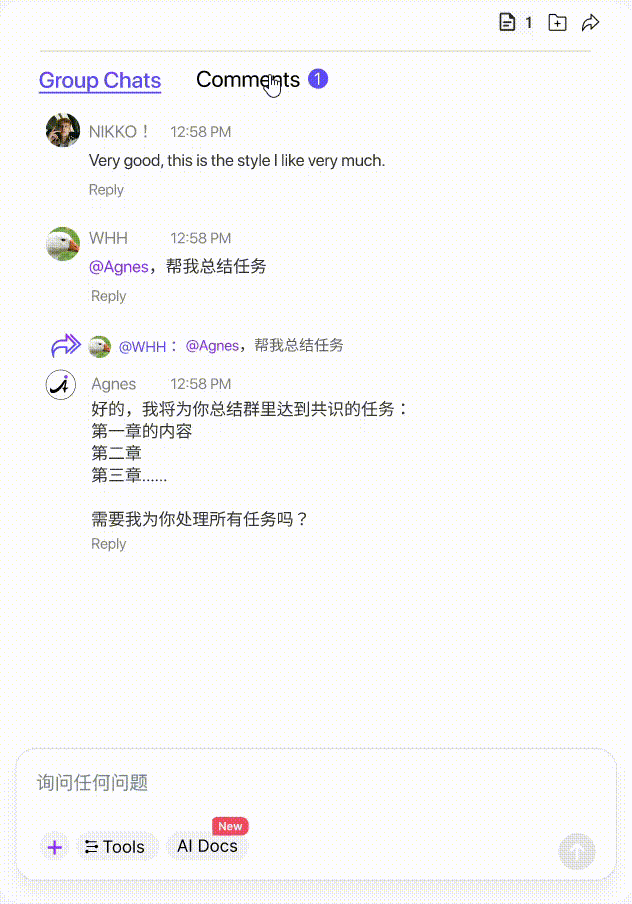
A centralized hub for comments with “magic fix feature” that allows solving comments with Agnes AI in one click.
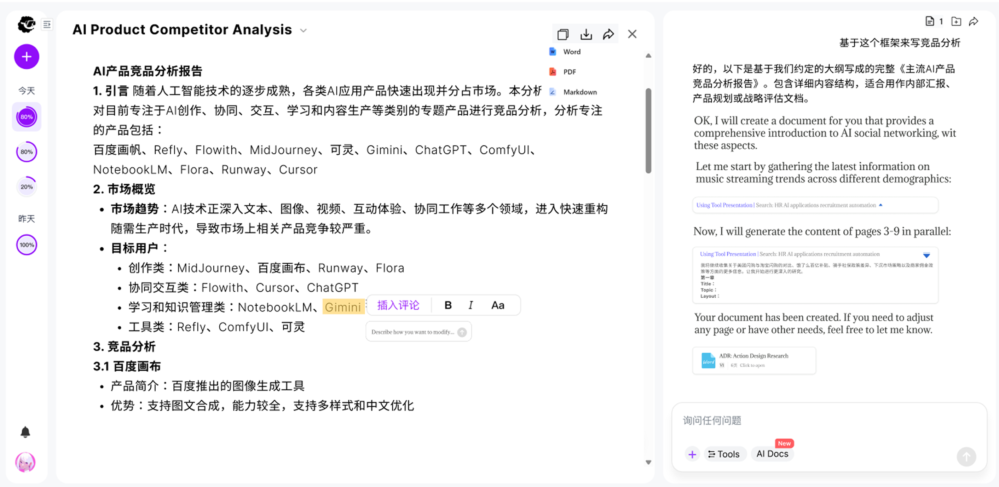
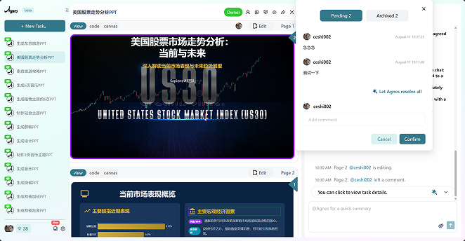
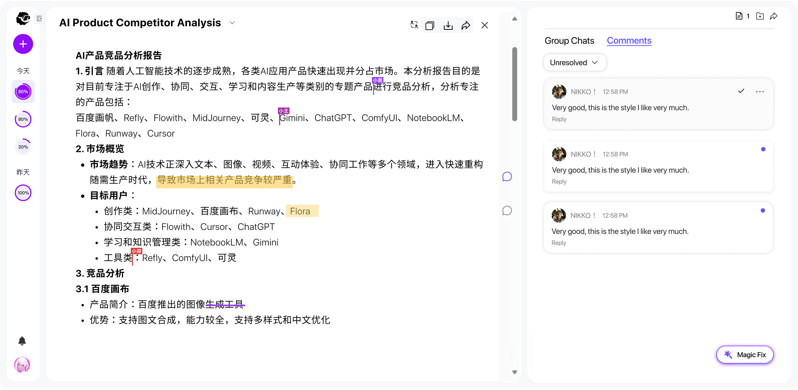
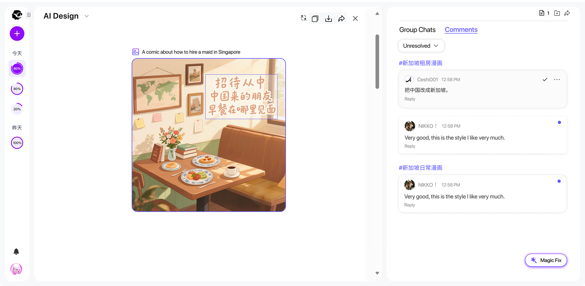
Enable collaboration features to work fluidly across Agnes AI tools without context switching.
Proactively avoid edit conflicts and version issues before they disrupt team flow.
Offer clear, user-friendly controls over AI-powered bulk edits and comment management.
The one click function provides a very convenient way for users to leave feedback first and then collectively resolve, but when it comes to collaboration, people might leave feedback that are not suggestions .
AI pre-selects relevant comments, but users can still select or deselect comments at-will.
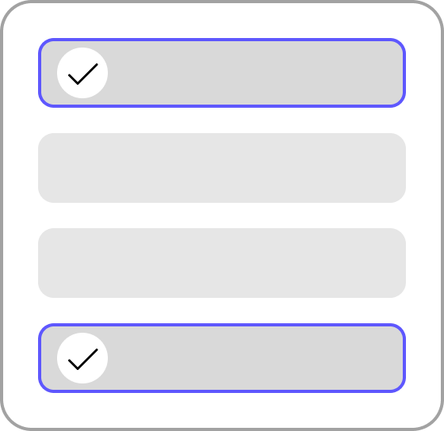
In the current application, the magic wand icon is used to summarize group chat contents with one click. How can we resolve the conflict caused by the same icon being used for two different “one-click” features, and ensure users have clear and intuitive access to both?
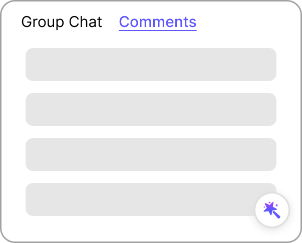
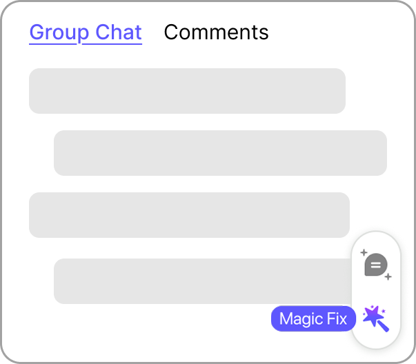
In the Agnes Slides feature, we wanted to give users the freedom to resolve comments on each slide separately. In this case, the “one-click” feature could no longer work.
To compensate for this limitation, we combined the comments for each separate page into one tab and added “resolve all comments on this page” buttons to the bottom of each page’s comment section.
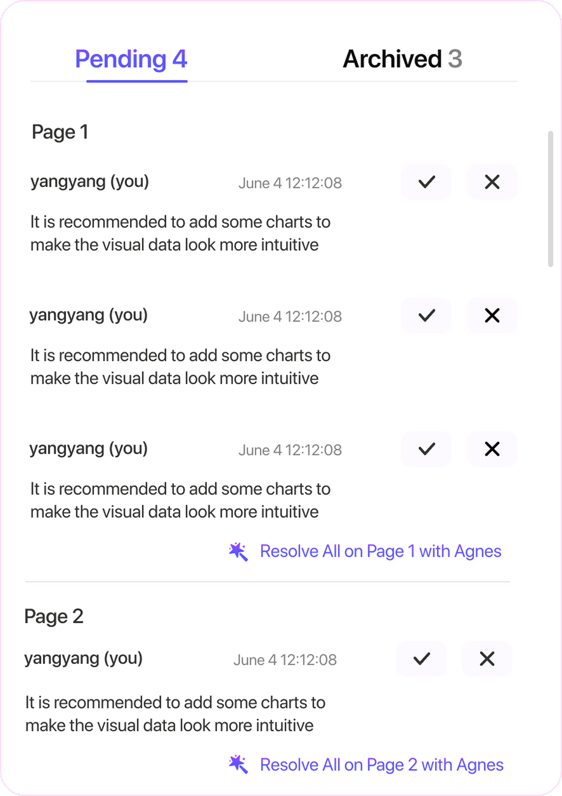
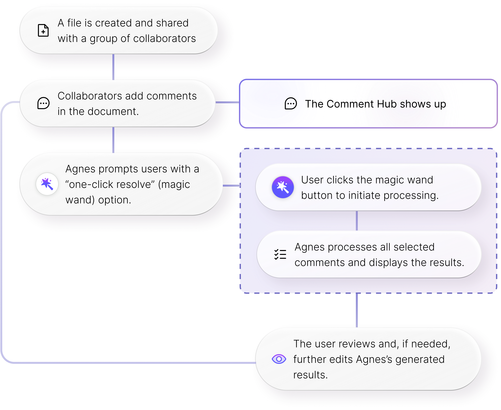
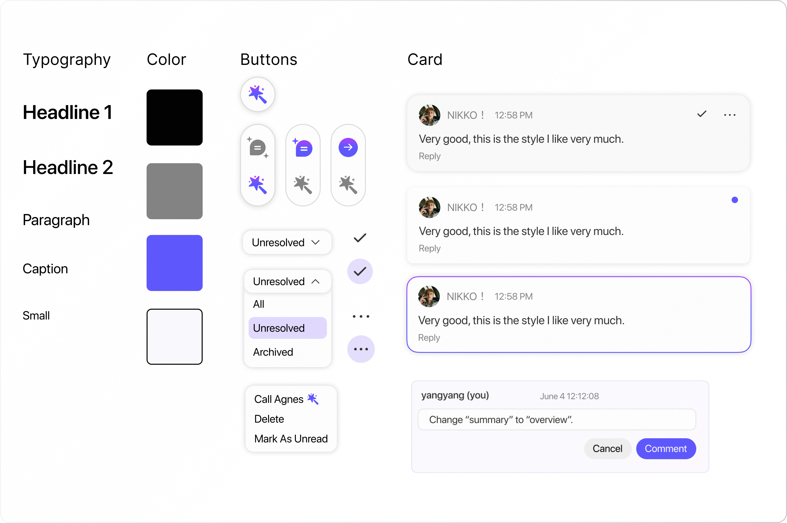
I learned how to work with complicated applications. I realized that the most important step is to look into all the existing features and use progressive disclosure smartly so that key information is presented first while maintaining the interface easily navigable.
Utilize the Comment Tab as a Control Hub
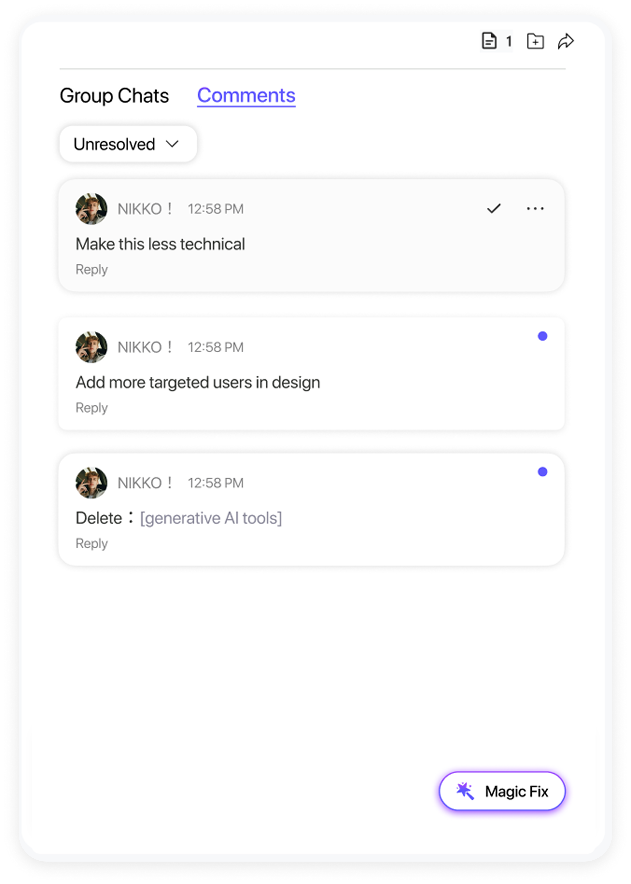
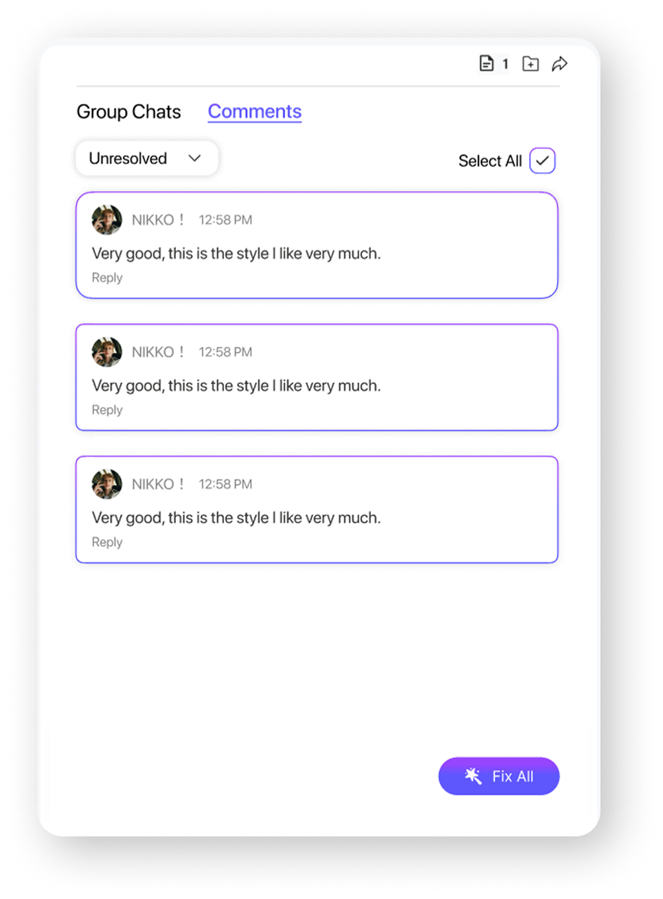
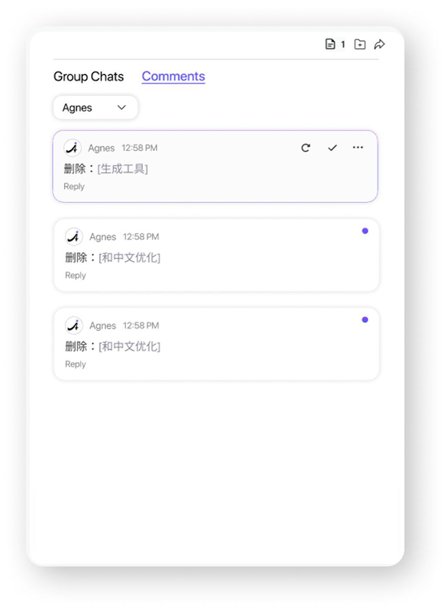